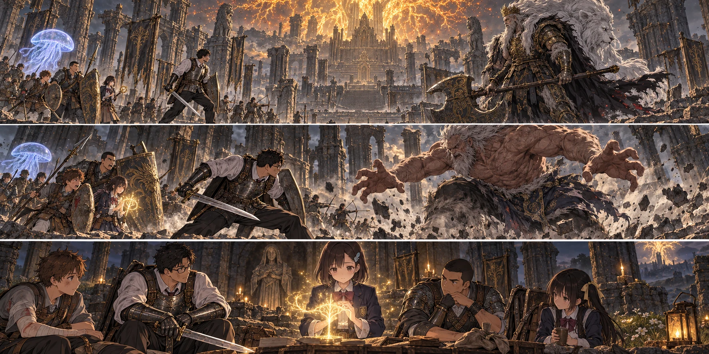

DAY93 / TURN1−103
王は、まだそこにいる。

陽太「槍があるから、もう一歩待てると思った」
【DAY93｜朝、二十六食】先生は教会で受け取った包みを、灰都の大聖堂へ運んだ。十三人の二日分。今日は挑み、終わったら帰る。勝った勢いで、もう一つ先の霧へ入らない。そう話してから、一人ずつ食べ物を渡した。空の袋を見ていた千夏が、ようやくそれを開いた。
教会では、第三隊が別の地図を広げていた。剣の強化に足りないのは、いちばん低い段階の鍛石だ。以前採った坑道の石が、休んだからといってまた生えているわけではない。翼たちは百二十ルーンを預かり、海岸と北の商人を訪ねる。今日は狩りを兼ねず、買って持ち帰ることに集中する。
【女王の閨へ｜2d6＝5・5＋4＝14】大聖堂の窓から伸びる根を上がる。灰の下へ消えた街路と違い、上階へ続く通路はまだ残っていた。以前の記憶と、今見える足場を照らし合わせ、十三人は女王の閨へ着いた。先生は、今度はその祝福に触れた。
一人ずつ、到達して登録する。誰かが倒れるまで取っておく場所だけでなく、明日の移動を省く場所も要る。旧市街で見たというだけの記録から、今使える足場へ。全員で休み、瓶と術を整えた。
葵が寝台の近くで、祈祷の記録を見つけた。黄金樹の回復。少しずつ傷を支える、恵みとは別の術だった。「これなら、追いつくかも」。言いながら、葵は読みかけた指を止めた。今の信仰では足りない。先生は持ち帰る袋へ入れた。「帰ったら、君に回す。今日は、今できるものを頼む」。
【王座の前】霧の向こうにいた王は、黄金の幻影ではなかった。斧を地へ置く重い音がした。白い獅子の姿が肩越しにこちらを見ている。王の身体は、息をしていた。それだけで、前に勝った記憶が、思ったほど役に立たないと分かった。
「小さき者らを連れ、ここまで来たか」。ゴッドフレイは、先頭の先生から後ろの列へ視線を移した。「守りながら、王座を取りに来る。その覚悟、刃で示すがよい」。先生は名乗り返す代わりに、盾を持ち直した。「全員を帰すために、通らせてもらう」。王は斧を持ち上げた。
【斧を持つ王｜2d6＝3・6＋4＝13】最初の踏みつけで、床が波になった。先生は足が落ちる瞬間を見て跳ぶ。後ろへ逃げ続ければ、次の斧に追いつかれる。着地から横へ抜け、振り下ろされた刃の脇へ剣を入れた。健太は同じ場所へ重ならず、次に狙いを受ける位置を取る。
大地の黄金のハルバードが光った。先生と直人へ渡った誓いの間に、クララが側方へ浮かぶ。花と千夏は、足を止めたまま撃ち続けなかった。王の踵が上がれば、弦を引きかけても止める。避けて、足場を取り直し、それから射る。
悠の三つの輝石が斧の戻りに重なり、拓海が続けた。先生が王を横へ向け、直人の大竜爪が届く。追撃を欲張らず全員が離れたところで、紬が屈んだ。火柱が立ち上がる。王の姿は炎の中でも倒れなかったが、斧の柄を握る腕が一度、下がった。
「届いてる」。陽太は声に出した。自分の槍が、誰かの次の一撃へつながっている。死なずに帰るためだけに練習していた頃より、自分たちは強くなった。そう思うことまで、怖がらなくていいはずだった。
【戦士ホーラ・ルー｜2d6＝1・2＋4＝7】王が背へ手を伸ばした。白い獅子の咆哮が途切れる。重い斧が手を離れた。鎧と肩書の下から現れた男は、武器を捨てて弱くなったようには見えなかった。「ならば、この身で応えよう」。広げた手が、先生へ伸びた。
先生は盾を差し出さず、横へ抜けた。掴みは防げない。予習した言葉より早く、身体がそれを選んだ。その先で交代に入った陽太は、もう半歩だけ下がれると思った。槍の間合いが消える。敵の腕が肩を捉えた瞬間、先生が斬り込み、健太の槍が横から届いた。
最後まで持ち上げられる前に外れた。それでも陽太は床を転がり、肺の空気を吐いた。赤瓶を口へ運ぶ指が遅れる。葵はすでに六人へ恵みを渡していたが、それだけでは今の一撃に追いつかない。残していた治療を使う。「息、吸える？」。陽太は一度、浅く吸ってから頷いた。
側方で青い光が散った。クララが、踏みつけの広がる衝撃に消えていく。囮が一人分減った、と数字にするより早く、こちらを見ていなかった顔が向いた。先生は陽太の前へ戻った。健太もそこへ集まろうとして、止まる。三人が同じ場所にいれば、三人とも同じ地面に倒される。
【終盤｜2d6＝1・3＋5＝9】先生の合図で、前衛は間隔を開けた。だが、開いた分だけ次の一撃まで時間がかかる。遠くから射る者にも地面の揺れは届く。術を構えた悠が足を浮かせ、拓海は詠唱を途中で止めた。避けられた。けれどその間、敵を削れてはいなかった。
先生は踏みつけの後を取りに行き、続く一歩に足を払われた。盾を床へ当てて立つ。赤瓶を使う間を大地と陸が作り、紬は火柱の後に残していた一度の治療を届けた。先生は陽太を見た。立っている。健太も、直人も。まだ動ける者を、まだ動けるというだけで、もう一度同じ所へ出していいのか。
【進捗2＋1＋1＝4｜未撃破】事前に決めた撃破条件の五には届かなかった。先生はもう一度、全員の返事を取った。「今日は、ここまでだ」。王はまだそこにいる。こちらの攻撃で膝をつかせた場面もあった。その光景だけを持ち帰れば、次も同じ負け方になる。
選んだのは、既定の挑戦放棄だった。霧を抜けて逃げたわけでも、戦闘の途中で教会へ飛んだわけでもない。十三人は挑戦前に休んだ女王の閨へ戻った。敵の傷、この戦いで使った矢や瓶や術も戻る。陽太と先生の傷も残らない。過ぎた一日と、武具の傷みと、掴まれた瞬間の記憶は戻らなかった。
陽太は、痛みの消えた肩を動かした。「槍があるから、もう一歩待てると思った」。先生は手帳に書いた。「私も、足を止めさせようと近くへ寄せすぎた」。誰か一人の避け損ないで終わらせない。次は交代する場所まで決め直す。今日一度だけ、という約束を守り、全員が安全な祝福から教会へ帰った。
【石を持ち帰る｜2d6＝6・5＋4＝15】翼たちの袋には、鍛石が六つ入っていた。海岸洞窟の南東の商人から三つ、北へ歩いて聖人橋の東の商人から三つ。見たことのない祝福へ飛んだのではない。街道の敵を避け、歩いて店を訪ね、在庫を確かめて買ってきた。
「六個で、足りますか」。翼の問いに、先生は剣を抜かず、鞘を持ち上げた。「この一本を、もう一段」。王の斧に比べれば細い武器だった。けれど、それを持って前に立つ人を、自分たちも支えられる。翼は袋の口を広げ、数え終わるまで手を離さなかった。
【帰還後の整備】先生は既に登録している円卓へ赴き、ヒューグに剣を預けた。鍛石六個と作業費六十ルーン。片手剣は＋二から＋三へ。損耗した武具が全部新品になるわけではなく、他の武器も一緒に強化されるわけではない。打ち直された一本を受け取り、先生は教会へ戻った。
葵には八百ルーンを回した。レベル六十五から六十九、増えた四つを信仰へ。四十二に届き、持ち帰った黄金樹の回復を覚える。準備する二枠は、恵みと、新しい回復。今までの治療を外す時、葵は少し迷った。小さく何度も使える手段を、大きく戻せる手段へ替える。その違いは、便利という一言では済まなかった。
試演の光が、近くにいる六人を包んだ。傷をゆっくり支える恵みとは違う、まとまった回復。だが共通の術三回分のうち、一度で二回分を使う。恵みを使った後に続けるなら、青瓶を飲む時間を作らなければならない。「ここを空けて。そこで飲むから」。葵は皆に場所を示してから、祝福で休み直した。
【DAY93｜教会、三十三人】近場の狩りは二頭、二十四食分。亮たちは獲物を追いすぎず帰った。狩猟判定は二と一、補正込み七。留守の八人が暮らしを守り、第三隊は石を持ち帰り、主力は勝てなかった理由を持ち帰った。全員が同じ屋根の下へ戻った。
残るのは四万五千二百ルーン、矢四百十八本、食料五十三食分。第一王の報酬は一つも加えていない。王座の祝福も、まだ使えない。それでも女王の閨から、次はすぐ挑める。先生は九十四日の欄へ手を置いた。九十九日を目標とするなら、あと六日。勝てなかった今日を、ただ失った一日にしないための準備が、机の上に並んでいた。
今回の判定記録
| 判定 | 出目 | 補正 | 合計 |
|---|
| approach | 5+5 | 4 | 14 |
| godfrey | 3+6 | 4 | 13 |
| hoarahLoux | 1+2 | 4 | 7 |
| finish | 1+3 | 5 | 9 |
| cShopping | 6+5 | 4 | 15 |
| base | 2+1 | 4 | 7 |
抽選前の条件 · 抽選結果